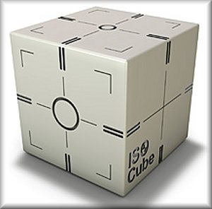

ISO Cube Daily QA Phantom

| Stock # | Description | Price | |
|---|---|---|---|
| 023 | ISO Cube Daily QA Phantom | $3,561.85 | |
| 023-01 | (Optional) Stereotactic Target Frame Adapter | $1,345.23 | |
| 023-03 | ISO Analyze Software Package for the model 023 ISO cube | $5,310.00 | |
Features
Fast and easy to use
Unique shell fiducials produce sharp clear images in EPID, kV and CBCT imaging
Offset fiducial to check accuracy of couch corrections
Check
– Laser alignment
– Light field size verification
– kV and MV imager coincidence
– CBCT process accuracy
– ODI accuracy
– Table height accuracy
– Radiation field/light field alignment
Target positioning through imaging localization is critical for the accurate delivery of radiation treatment. Verifying that all of the imaging, localization and targeting systems are aligned with the true radiation isocenter is crucial. The CIRS ISO Cube provides a cost-effective, quick and accurate means of testing radiation isocenter alignment between the lasers, light field and image guidance systems.
The ISO Cube was designed specifically for daily system checks. The lasers and light field can be tuned to the true radiation isocenter using the engraved markings on the exterior of the ISO Cube. The light field and radiation field alignment can be checked using integral radiographic markers. More importantly the isocenters of both the OBI and the EPID can be checked for true spacial alignment and coincidence with that of the treatment beam.
The ISO Cube contains a unique center point fiducial and an offset blind target. The blind target is used to insure the table offset coordinates generated by kV/MV imaging are accurate by locating the target, moving the table the determined amounts and verifying that the blind target has been positioned at the isocenter. The exterior is machined with concentric circle targets to allow user to objectively assess all setup errors, including rotations, and to easily align the phantom to the true radiation isocenter.
Fast and easy to use
Unique shell fiducials produce sharp clear images in EPID, kV and CBCT imaging
Offset fiducial to check accuracy of couch corrections
Check
– Laser alignment
– Light field size verification
– kV and MV imager coincidence
– CBCT process accuracy
– ODI accuracy
– Table height accuracy
– Radiation field/light field alignment
Target positioning through imaging localization is critical for the accurate delivery of radiation treatment. Verifying that all of the imaging, localization and targeting systems are aligned with the true radiation isocenter is crucial. The CIRS ISO Cube provides a cost-effective, quick and accurate means of testing radiation isocenter alignment between the lasers, light field and image guidance systems.
The ISO Cube was designed specifically for daily system checks. The lasers and light field can be tuned to the true radiation isocenter using the engraved markings on the exterior of the ISO Cube. The light field and radiation field alignment can be checked using integral radiographic markers. More importantly the isocenters of both the OBI and the EPID can be checked for true spacial alignment and coincidence with that of the treatment beam.
The ISO Cube contains a unique center point fiducial and an offset blind target. The blind target is used to insure the table offset coordinates generated by kV/MV imaging are accurate by locating the target, moving the table the determined amounts and verifying that the blind target has been positioned at the isocenter. The exterior is machined with concentric circle targets to allow user to objectively assess all setup errors, including rotations, and to easily align the phantom to the true radiation isocenter.